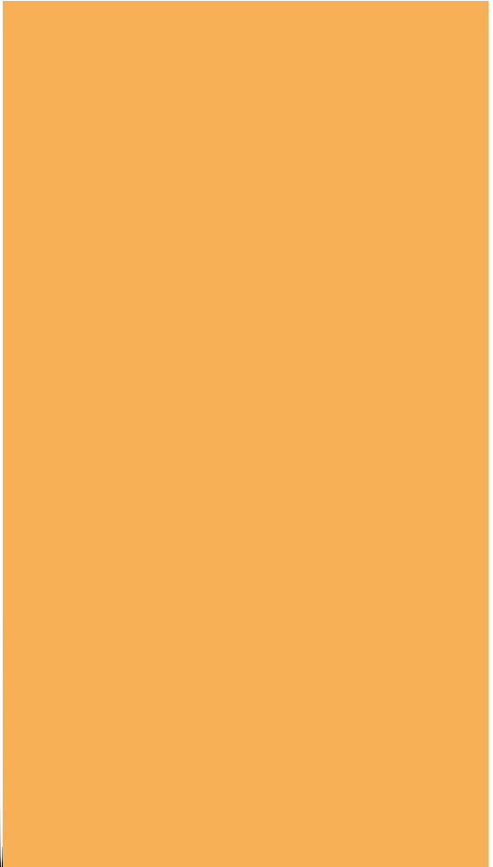
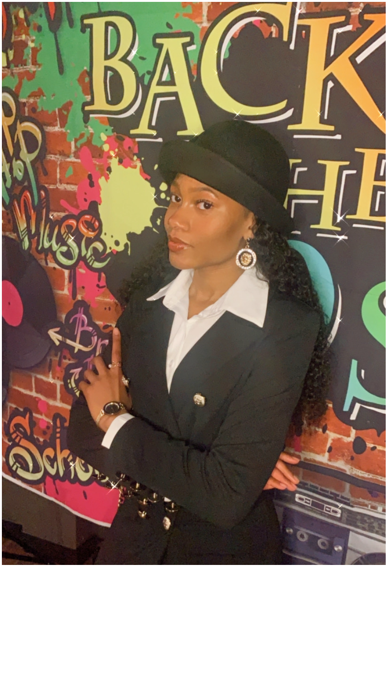
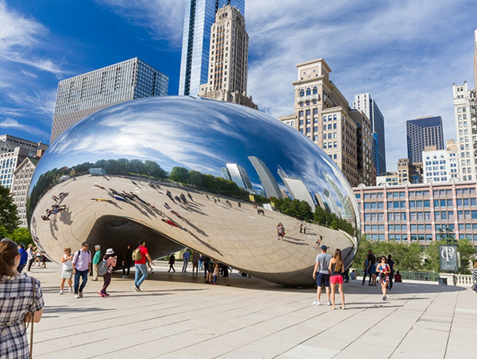

About Me
My name is Nia Gray, and I am a 22-year-old female from the southside of Chicago, Illinois. Growing up in a big city like Chicago has molded me into a lifelong learner and explorer because there is a diverse range of things to see, hear, and experience. I genuinely believe that the world's most important resource is people. When people work together, they can achieve almost anything. My love for people, teamwork, and human advancement have significantly impacted my life path thus far. I want to share how these passions have influenced my education, work experiences, and community involvement through this website.



